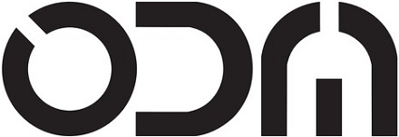

Open Democracy Manitoba builds tools that strengthen our democratic infrastructure.
We empower people, helping them learn about the roles, decisions, and visions of our representatives in order have a more accountable, respectful, and engaged democracy.
Decisions Made by Winnipeg City Council
Citizen Resource for Winnipeg Elections
Citizen Resource for Manitoba Elections
Open Democracy Manitoba (ODM) is a non-profit organization that builds online tools to foster government accountability, transparency and public education. Our board is volunteer-run and our websites are operated in the spirit of openness and community.
Open Democracy Manitoba is run by Kyle Geske, Ken Harasym, and Andrew Burton. Their bios can be read below.
ODM ran WinnipegElection.ca for the 2010, 2014, 2018, and 2022 Winnipeg civic elections, as well as ManitobaElection.ca for the 2011, 2016, 2019, and 2023 provincial Manitoba elections. These sites have helped hundreds of thousands of voters research their candidates and learn about their local democratic process. We take measures to ensure that all candidate and election-related information is retrieved and presented in a fair and unbiased manner. WinnipegElected.ca was launched in 2016 and was built with help from the Winnipeg City Clerk's Department.
Open Democracy Manitoba received the Open Data for Democracy award at the 2017 Canadian Open Data Summit in Edmonton, Alberta.
We sometimes blog about the technical details of our projects. The source code for all our projects is available for others to view, use and extend.
Open Democracy Manitoba will be a leader in civic technology and citizen education in support of democracies worldwide.
Kyle Geske He is a co-founder of Open Democracy Manitoba, its current Executive Director, and its lead programmer. Kyle has 25 years work experience as a computer programmer and 10 years experience as an open-source contributor. He regularly speaks in public forums to champion open government ideas and open data best-practices. As a programming instructor at Red River College, Kyle challenges and inspires the next generation of Manitoban game development innovators.
Follow Kyle as @stungeye on Twitter.
Ken Harasym is an Artist and Multimedia Designer with a passion for creating engaging multimedia advocacy content. Committed to a high-level of quality visual work, Kenneth provides the Open Democracy Manitoba websites with design and image content. As one of the co-founders of Open Democracy Manitoba he enjoys contributing to the highly collaborative team.
Follow Ken as @kennethharasym on Twitter.
Andrew Burton has spent 20 years in web development, and 25 years watching the Internet change. Currently he is the Open Data Administrator for the City of Winnipeg. Previously, he worked as a full stack programmer at the Winnipeg Free Press.
Follow Andrew as @chefquix on Twitter.
A history of our websites can be seen through our press releases, our press mentions, and our frequently asked questions.
ManitobaElection.ca press releases, press mentions, and frequently asked questions from 2016 and 2011.
WinnipegElection.ca press releases, press mentions, and frequently asked questions from 2018, 2014 and 2010.
The data that powers our websites is available as open data:

Built with ♥ by Open Democracy Manitoba.
All content is Public Domain.